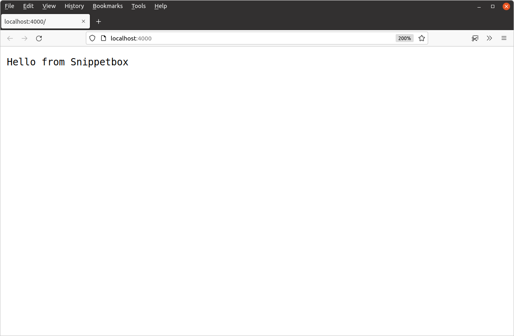

مبانی برنامههای وب
حالا که همه چیز به درستی تنظیم شده است، بیایید اولین نسخه برنامه وب خود را بسازیم. ما با سه مورد کاملاً ضروری شروع میکنیم:
اولین چیزی که نیاز داریم یک handler است. اگر قبلاً برنامههای وب را با الگوی MVC ساختهاید، میتوانید handler ها را کمی شبیه کنترلرها در نظر بگیرید. آنها مسئول اجرای منطق برنامه و نوشتن هدرها و بدنه پاسخ HTTP هستند.
دومین جزء یک router (یا servemux در اصطلاح Go) است. این جزء نگاشت بین الگوهای مسیریابی URL برنامه و handler های متناظر را ذخیره میکند. معمولاً یک servemux برای برنامه خود دارید که شامل تمام مسیرهای شماست.
آخرین چیزی که نیاز داریم یک سرور وب است. یکی از نکات عالی Go این است که میتوانید یک سرور وب را راهاندازی کنید و به عنوان بخشی از برنامه خود به درخواستهای ورودی گوش دهید. شما نیازی به سرور خارجی شخص ثالث مانند Nginx، Apache یا Caddy ندارید.
بیایید این اجزا را در فایل main.go کنار هم قرار دهیم تا یک برنامه کاربردی بسازیم.
package main import ( "log" "net/http" ) // Define a home handler function which writes a byte slice containing // "Hello from Snippetbox" as the response body. func home(w http.ResponseWriter, r *http.Request) { w.Write([]byte("Hello from Snippetbox")) } func main() { // Use the http.NewServeMux() function to initialize a new servemux, then // register the home function as the handler for the "/" URL pattern. mux := http.NewServeMux() mux.HandleFunc("/", home) // Print a log message to say that the server is starting. log.Print("starting server on :4000") // Use the http.ListenAndServe() function to start a new web server. We pass in // two parameters: the TCP network address to listen on (in this case ":4000") // and the servemux we just created. If http.ListenAndServe() returns an error // we use the log.Fatal() function to log the error message and exit. Note // that any error returned by http.ListenAndServe() is always non-nil. err := http.ListenAndServe(":4000", mux) log.Fatal(err) }
وقتی این کد را اجرا میکنید، یک سرور وب را روی پورت ۴۰۰۰ ماشین محلی شما شروع میکند. هر بار که سرور یک درخواست HTTP جدید دریافت میکند، آن را به servemux منتقل میکند و servemux مسیر URL را بررسی کرده و درخواست را به handler متناظر ارسال میکند.
بیایید این را امتحان کنیم. فایل main.go خود را ذخیره کنید و سپس با استفاده از دستور go run آن را از ترمینال اجرا کنید.
$ cd $HOME/code/snippetbox $ go run . 2024/03/18 11:29:23 starting server on :4000
در حالی که سرور در حال اجراست، یک مرورگر وب باز کنید و سعی کنید به http://localhost:4000 بروید. اگر همه چیز طبق برنامه پیش رفته باشد، باید صفحهای شبیه این را ببینید:

اگر به پنجره ترمینال خود برگردید، میتوانید با فشار دادن Ctrl+C روی صفحه کلید خود سرور را متوقف کنید.
اطلاعات تکمیلی
آدرسهای شبکه
آدرس شبکه TCP که به http.ListenAndServe() میدهید باید به فرمت "host:port" باشد. اگر host را حذف کنید (مثل ما که ":4000" را استفاده کردیم) سرور روی تمام رابطهای شبکه موجود در کامپیوتر شما گوش خواهد داد. به طور کلی، فقط زمانی نیاز به مشخص کردن host در آدرس دارید که کامپیوتر شما چندین رابط شبکه داشته باشد و بخواهید فقط روی یکی از آنها گوش دهید.
در پروژهها یا مستندات دیگر Go ممکن است گاهی اوقات آدرسهای شبکه را با پورتهای نامگذاری شده مانند ":http" یا ":http-alt" به جای عدد ببینید. اگر از یک پورت نامگذاری شده استفاده کنید، تابع http.ListenAndServe() سعی میکند شماره پورت مربوطه را از فایل /etc/services شما هنگام شروع سرور جستجو کند و در صورت عدم یافتن تطابق، خطا برمیگرداند.
استفاده از go run
در طول توسعه، دستور go run روشی مناسب برای امتحان کد شماست. این اساساً میانبری است که کد شما را کامپایل میکند، یک فایل اجرایی باینری در دایرکتوری /tmp شما ایجاد میکند و سپس این باینری را در یک مرحله اجرا میکند.
این دستور یا لیستی از فایلهای .go را با فاصله جدا شده، یا مسیر یک پکیج خاص (که کاراکتر . دایرکتوری فعلی شما را نشان میدهد)، یا مسیر کامل ماژول را میپذیرد. برای برنامه ما در حال حاضر، سه دستور زیر معادل هستند:
$ go run . $ go run main.go $ go run snippetbox.letsgofa.net